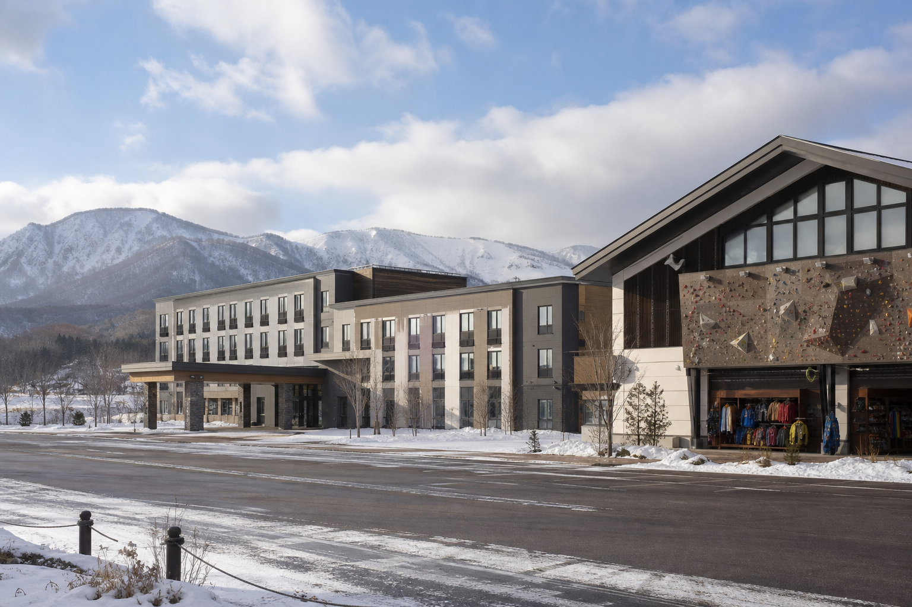

オリンピック級パウダー × 都市アクセス
札幌中心部から車約40分。15コース・最長5.4kmのレインボーコース——1972年オリンピック会場の斜面で、帰りはスープカレーGARAKUかビール園のジンギスカンへ。
ゲレンデマップ北海道札幌市 · 手稲区
昼はパウダー、夜は寿司と温泉——都市隣接型のスノー＆カルチャー・リゾート。
30–40km 広域コリドー ナイター 〜20:00 1972オリンピック会場更新 6/23 8:00
手稲山ゴンドラ
運行中
ハイランドゾーン
ナイター
20:00まで
白樺第1リフト
雪質
札幌パウダー
人口200万都市のすぐ隣
ほのか温泉
24時間
下山動線のトランジット拠点

Snow & Culture Corridor
世界最高水準のパウダー、人口200万人都市のインフラ、歴史的港湾都市、湯治文化が半径30〜40kmに密集——ニセコ型の自己完結リゾートとは異なる「都市隣接型・広域分散型」の稀有な地政学優位性。
Snow & Culture Pass
高付加価値FIT向け——スキー後に小金湯の貸切風呂、夜は小樽で政寿司。定山渓のシャレーアイビーに泊まれば全室展望風呂でプライベート温泉体験。広域回遊のベースキャンプ設計。

厳選ガイド
広域コリドーの厳選施設は子ページに集約。電話・公式リンク・マップ付き。
Access
札幌中心部から車約40分 · 新千歳空港から約80分 · JR手稲駅からバス · 駐車場あり
TEL 011-681-2111（札幌手稲スキー場）